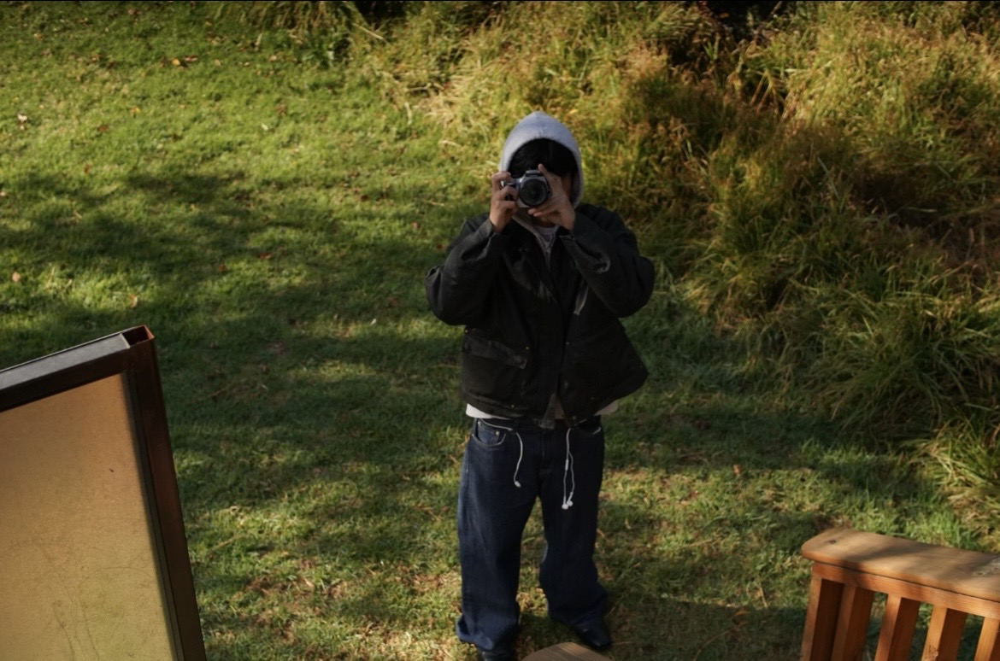

Mi nombre es Enrique Salas Galindo y tengo 20 años. Me gusta la fotograía, animación y la edición de videos. Además de gustarme la animación, me gusta mucho la moda
y también quisiera participar en algún evento relacionado, ya sea en alguna
pasarela o incluso hacer mi propia marca de ropa.
Mi pasatiempo favorito es escuchar y descubrir nuevas canciones. Últimamente me gusta
mucho latin mafia, shawn mendes, en general me gustan todo tipo de canciones.
Por último, soy una persona que al iniciar la universidad le costaba mucho socializar
y conseguir nuevas amistades, pero durante el año que llevo estudiando la
Licenciatura en Arte y Comunicación Digitales y he logrado mejorar en ese aspecto
ya que me ha ayudado a encontrar mi estilo.